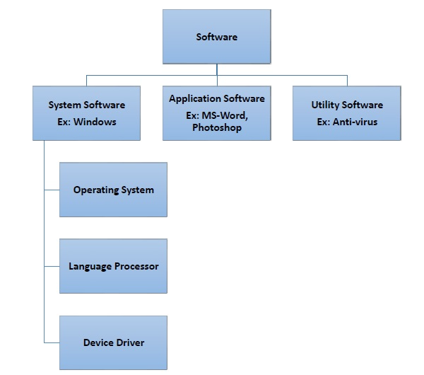

System Software
Operating System (OSs):
- Need: An operating system is essential for managing hardware resources and providing a user interface. It acts as an intermediary between the user and the computer hardware.
- Functions:
- Process Management: The OS manages processes, allocating resources and scheduling tasks to ensure efficient execution.
- Memory Management: It oversees the allocation and reallocation of memory space for different processes.
- File System Management: Organising and managing files and directories on storage devices.
- Device Management: Controlling and coordinating input and output devices.
- User Interface: Providing a platform for user interaction, often through graphical interfaces or command-line interfaces.
Utility Programs:
- Need: Utility programs enhance system performance, provide maintenance functions, and ensure data integrity.
- Functions:
- Antivirus Software: Protects the system from malware and viruses.
- Disk Cleanup Tools: Remove unnecessary files to free up storage space.
- Backup and Recovery Tools: Facilitate data backup and recovery in case of system failures.
- Disk Defragmentation: Reorganises fragmented data on the disk for improved efficiency.
Libraries:
- Need: Libraries are collections of pre-written code that can be used by programmers to simplify software development.
- Functions:
- Code Re-usability: Libraries contain functions and procedures that can be reused in various programs.
- Time Efficiency: Developers can save time by leveraging existing, tested code rather than writing everything from scratch.
Translators (Compiler, Assembler, Interpreter):
- Need: Translators convert high-level programming languages into machine code that the computer can execute.
- Functions:
- Compiler: Translates the entire program into machine code before execution. Errors are detected before running the program.
- Assembler: Converts assembly language code into machine code. It is specific to a particular architecture.
- Interpreter: Translates and executes code line by line. Errors are identified as each line is executed.
- Understanding the functions of these components of system software is crucial for computer scientists and programmers as it provides the foundation for developing and maintaining efficient and reliable computer systems.
Understanding the functions of these components of system software is crucial for computer scientists and
programmers as it provides the foundation for developing and maintaining efficient and reliable computer systems.
